AI无缝接入Rstudio≈言出法随
原文：https://mp.weixin.qq.com/s?__biz=MzAwMzIzOTk5OQ==&mid=2247536883&idx=3&sn=af2a28a0a059a411d9b26ee7671e0524&chksm=9b3c29a3ac4ba0b546a06db19327112c17ae42c40aa10f5ad8eb17934f5cef99327be8d192ce#rd 合集：AI时代，不用就会被淘汰
写在前面
- 现在的生信领域没AI已经完全无法干活了。西柚云结合大家对AI编程以及日常运行任务时的实际需求，推出了不用魔法上网、无缝接入Rstudio的AI编程工具——xiyouAgent。能够帮助大家做到在Rstudio中直接调用AI进行对话、代码修改、代码注释，结合分析环境(足够支持你完成硕博生涯的生信环境)，几乎能做到数据分析的言出法随，反馈的代码直接就能在Rstudio里跑。
丰富的xiyouAgent功能
直接在Rstudio与AI聊天对话
- 在Rstudio中可以直接唤起聊天框向AI提问，再也不用在浏览器和Rstudio之间来回切换了！更不用担心因为魔法上网而导致网络冲突、卡顿。xiyouAgent能够提供多种AI大模型供选择，同时也支持自定义编程水平以及风格等参数。
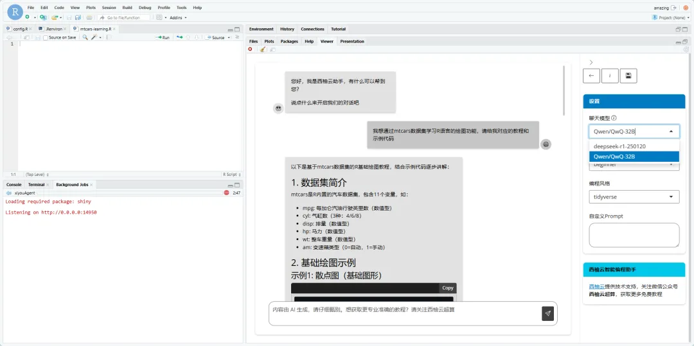
在代码编辑框与AI对话辅助编程
- xiyouAgent能够在代码框中直接注释代码，甚至能够点击AI Code调用AI的能力，直接让AI帮忙写代码。
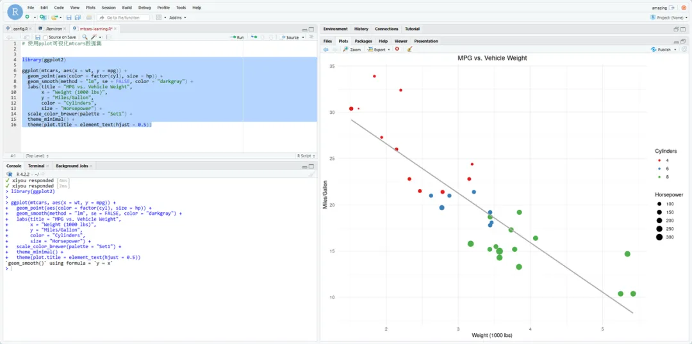
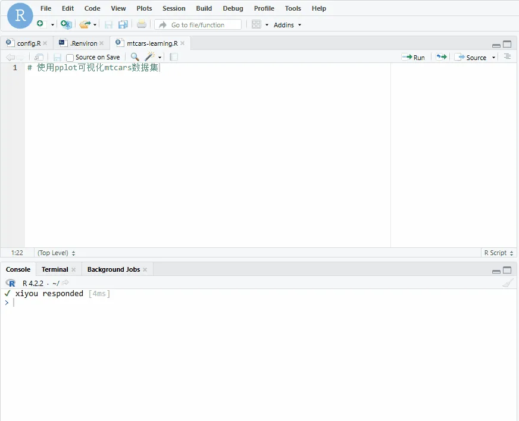
AI自动注释代码
-
选中指定的代码，点击AI Comment，使用AI一键详细注释代码，让代码不再晦涩难懂，给师弟师妹做教程都方便多了~
-
演示过程：
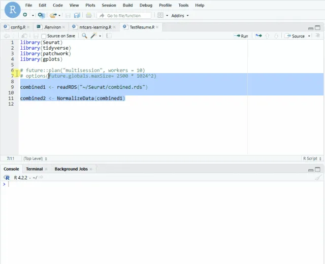
- 原始代码：

- AI补充注释后的代码：
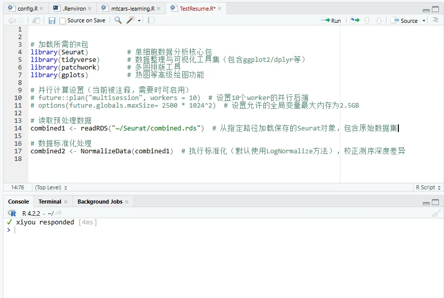
日志追踪
- 在运行大任务之时，总时不时想瞄一眼，又怕登录Rstudio会卡住？辛苦科研一天，晚上躺在床上，突然想起还有任务在运行着，又忧心忡忡？即使用nohup挂在后台，也得爬起来用终端看日志：程序可以自己跑的，不用盯着。只需要在代码的关键点位加上添加云日志的功能，就能在手机上看到具体的日志信息了。
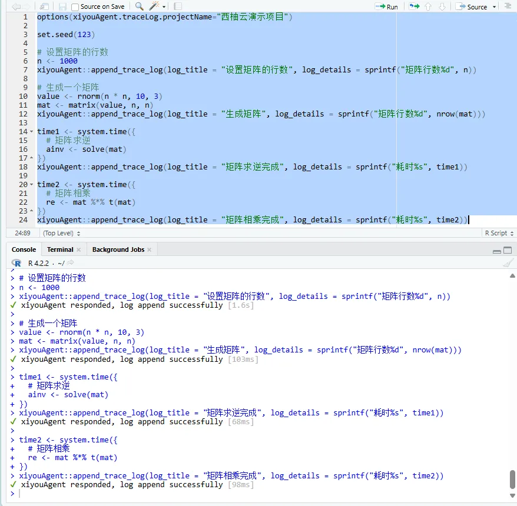
-
PC端查看进度，访问：https://ai.xiyoucloud.net/#/log-trace即可查看相关日志；也可以在移动端（西柚云超算公众号->实用工具->日志追踪）随时随地访问！只需要填上令牌就能查询到相关的日志了，日志还能按照项目分组，数据更加清晰！
-
PC端入口：
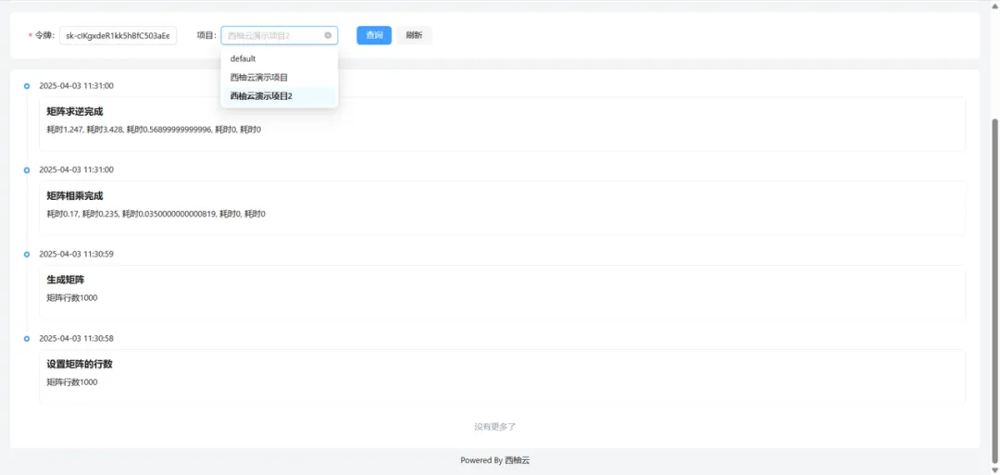
- 移动端入口：
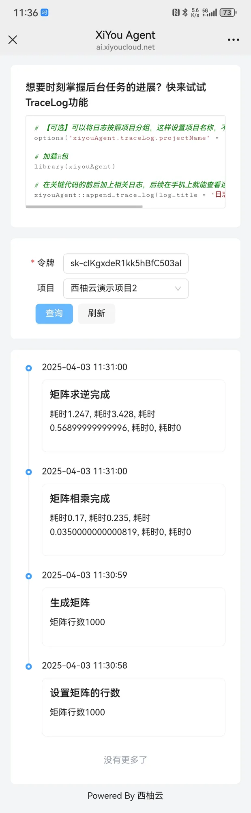
详细获取/使用教程
视频教程
登录获取API_KEY
API_KEY是调用西柚云服务器的凭证，没有API_KEY，xiyouAgent无法正常启动。
- 注册账号：复制网址(https://biomamba.xiyoucloud.net/)至浏览器，注册账号实名认证。申领免费两周学习版或足够支持你完成硕博生涯的生信环境，否则无法获取转发端口。
2.联系客服微信[Biomamba_yunying]获取大禹系统网址与登录方式 3.在大禹系统中打开XiYou AI页面 4.复制令牌备用
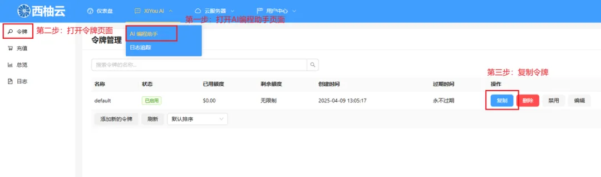
怎么获取Token
Token是调用AI能力的消耗品，如果您需要调用AI能力，请先充值Token，现在活动期间Token免费送。（日志追踪功能不消耗Token）
每个用户限制购买一次，请勿重复领取。如有恶意薅羊毛等行为，我们将追究责任。
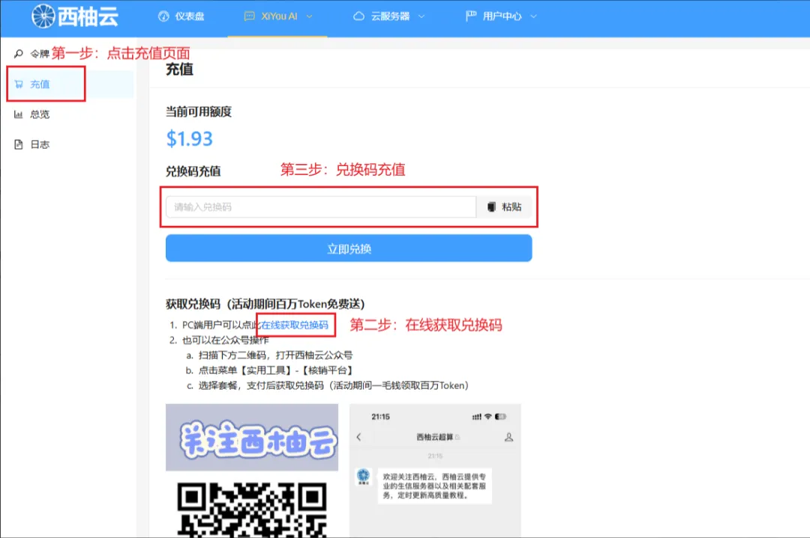
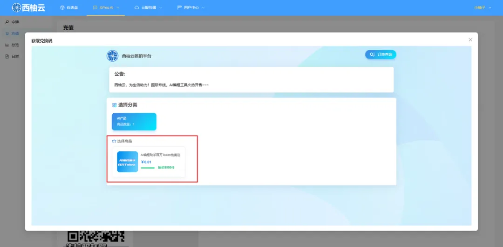
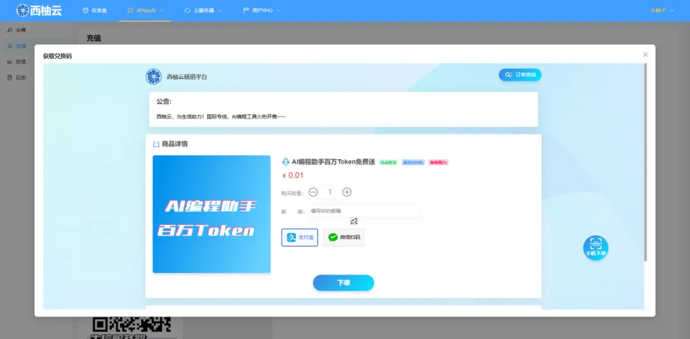
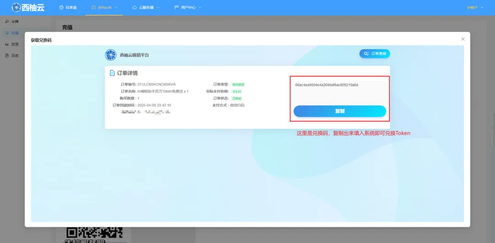
安装R包
安装依赖
install_if_missing <- function(pkg, repo_name, install_func, ...) {
if (!require(pkg, character.only = TRUE, quietly = TRUE)) {
message("Installing ", pkg, "...")
install_func(repo_name, ...)
} else {
message(pkg, " is already installed.")
}
}
for (pkg in c(
"bsicons", "bslib", "cli", "colorspace", "glue", "htmltools",
"htmlwidgets", "httr2", "ids", "jsonlite", "purrr", "R6",
"rlang", "rstudioapi", "shiny", "shiny.i18n", "SSEparser",
"stringr", "yaml", "digest", "AzureGraph", "future",
"knitr", "miniUI", "mockr", "promises", "rmarkdown",
"rvest", "spelling", "testthat", "withr"
)) {
install_if_missing(pkg, pkg, install.packages)
}
Windows
install.packages("https://resources.xiyoucloud.net/xiyouagent/xiyouAgent_0.0.1.zip", repos=NULL, type="binary")
MacOS
- 敬请期待......
Linux
# 以下命令在Linux终端执行
# Ubuntu20.04，要求R>=4.1.3
wget https://resources.xiyoucloud.net/xiyouagent/xiyou_agent_focal_r413_0.0.1_amd64.deb -O xiyou_agent_focal_r413_0.0.1_amd64.deb
sudo dpkg -i xiyou_agent_focal_r413_0.0.1_amd64.deb
# Ubuntu22.04，要求R>=4.2.0
wget https://resources.xiyoucloud.net/xiyouagent/xiyou_agent_jammy_r420_0.0.1_amd64.deb -O xiyou_agent_jammy_r420_0.0.1_amd64.deb
sudo dpkg -i xiyou_agent_jammy_r420_0.0.1_amd64.deb
# 如果要卸载的话，这样卸载
sudo dpkg -r xiyouagent
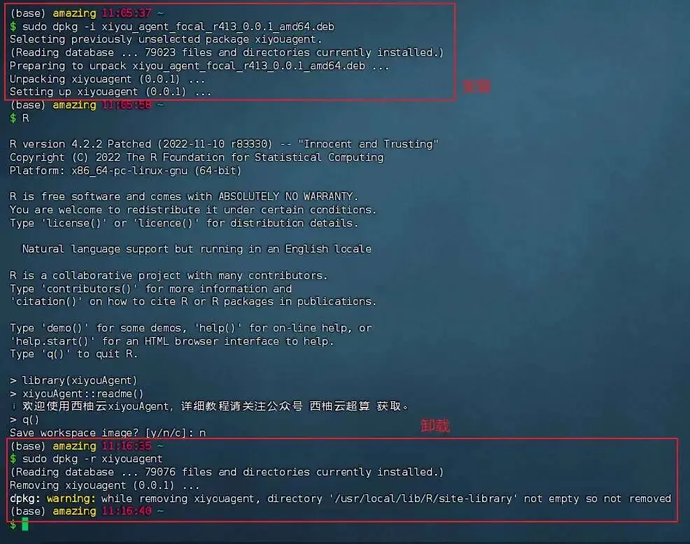
环境配置
-
执行 usethis::edit_r_environ() 编辑配置文件
-
填入API_KEY、XIYOU_AGENT_LISTING_PORT、XIYOU_AGENT_VISIT_URL
API_KEY可以在西柚云大禹系统免费获取 XIYOU_API_KEY="sk-xxx"，配置好后从以下页面复制即可：
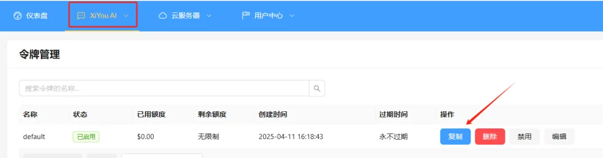
XIYOU_AGENT_LISTING_PORT、XIYOU_AGENT_VISIT_URL请参考你西柚云实例中的端口来设置。例如我的专业版节点：
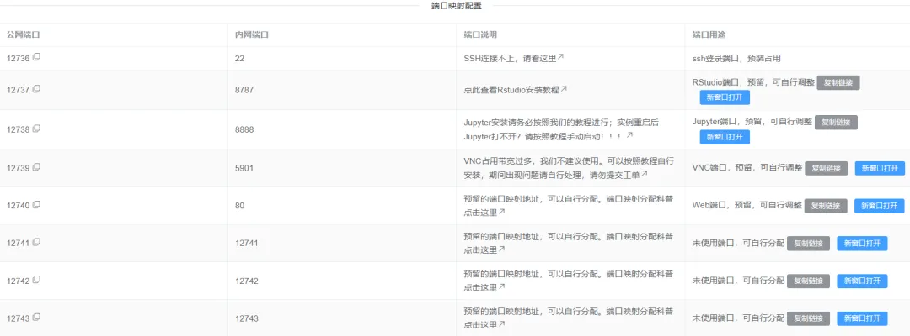
# 内网固定监听端口
XIYOU_AGENT_LISTING_PORT=12741
# 公网访问入口，格式为：协议://域名:公网端口
XIYOU_AGENT_VISIT_URL="http://xiyoucloud.pro:12741"
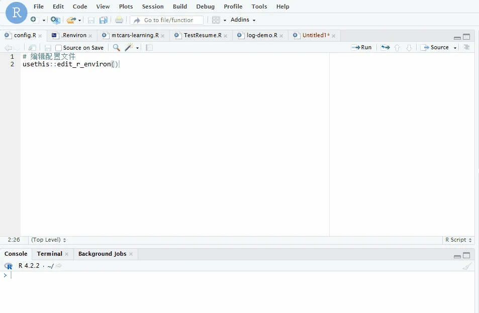
4.点击Rstudio的Session菜单，点击Restart R，重启Session使得配置生效
云服务器使用AI Chat功能
- 即使您不是在自己本地电脑使用Rstudio，而是在使用了端口映射的云服务器使用Rstudio，只需要按照本教程进行简单的配置也能照常使用，而且有访问控制的安全策略，避免非法访问公网端口。

- 配置如下：西柚云用户可以直接从西柚云系统复制相关信息，非西柚云用户按照自己云服务器的端口映射规则配置即可，注意是要配置一个空闲且可以公网访问的端口，不是Rstudio端口。
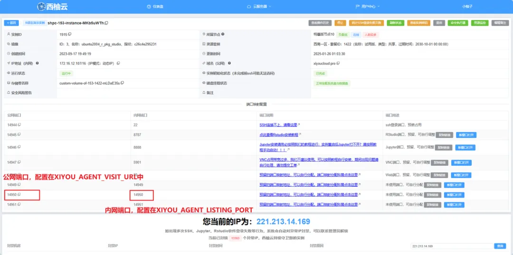
设置快捷键
- 可以通过设置Rstudio的快捷键，这样就可以通过快捷键触发相关的能力，不用每次都鼠标点击了。建议AI Code设置快捷键为CTRL+ALT+P（Program），AI Comment设置快捷键为CTRL+ALT+C（Comment）。
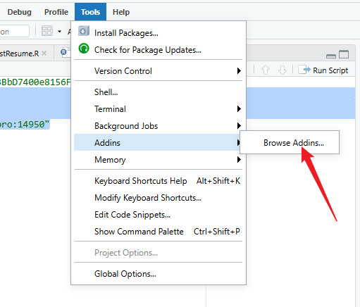
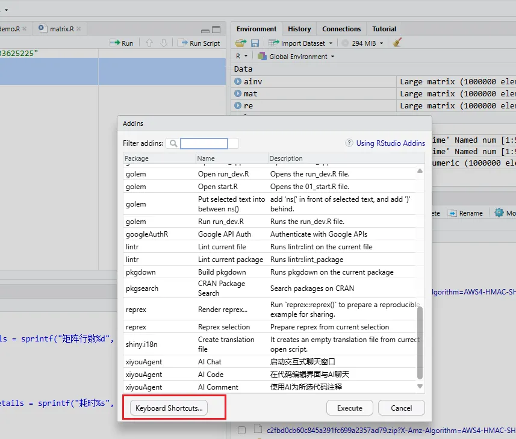
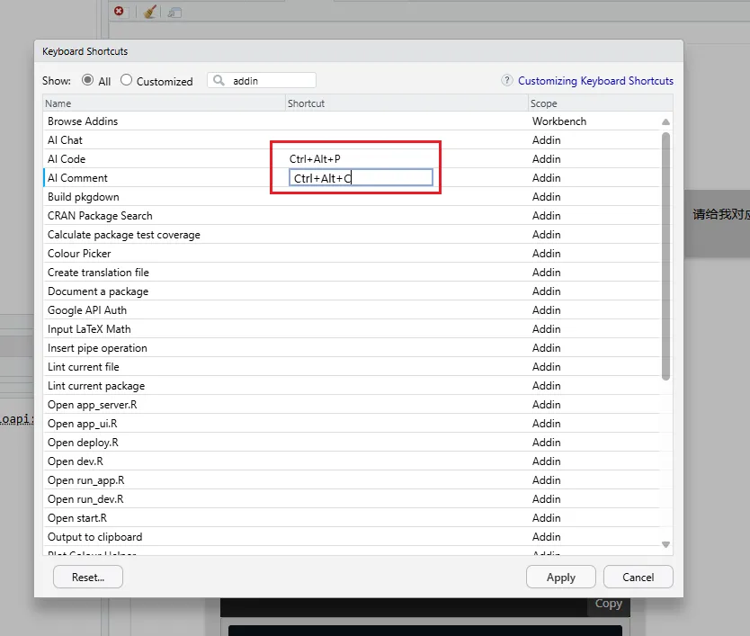
怎么切换模型
- 聊天框设置页面可以切换模型，建议依据实际场景选择合适的模型，修改模型后，对话功能即时生效，AI Code以及AI Comment功能需要重启Session才能切换模型。
| 模型标识 | 模型描述（来自火山引擎） | 备注 |
|---|---|---|
| doubao-1-5-pro-32k-250115 | 在多项公开测评基准上达到全球领先水平，特别在知识、代码、推理、中文权威测评基准上获得最佳成绩，综合得分优于GPT4o、Claude 3.5 Sonnet等业界一流模型。 | xiyouAgent默认模型 |
| doubao-1-5-pro-256k-250115 | Doubao-1.5-Pro-256k，基于Doubao-1.5-Pro全面升级版。相比Doubao-pro-256k/241115，整体效果大幅提升10%。输出长度大幅提升，支持最大12k tokens。 |
deepseek-v3-250324| DeepSeek-V3-0324 模型升级，推理能力显著提升，数学、代码评测超越 GPT-4.5；HTML 前端任务的代码可用性更高，视觉效果更美观、富有设计感；中文写作质量优化，长文本创作能力增强；搜索场景报告生成更精准。| 由于官方API比较火爆，该模型响应速度较慢，属于正常现象。 deepseek-r1-250120| DeepSeek-R1 在后训练阶段大规模使用了强化学习技术，在仅有极少标注数据的情况下，极大提升了模型推理能力。在数学、代码、自然语言推理等任务上，性能比肩 OpenAI 01 正式版。|
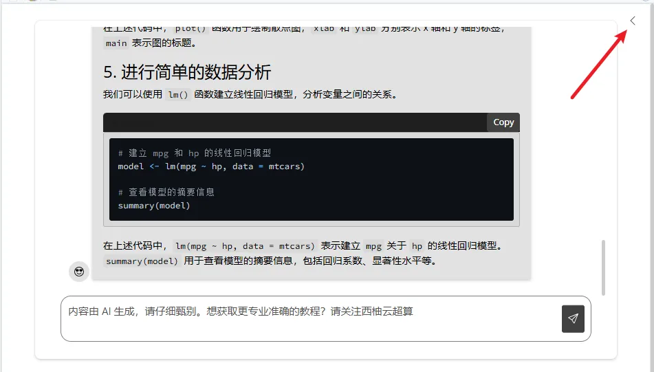
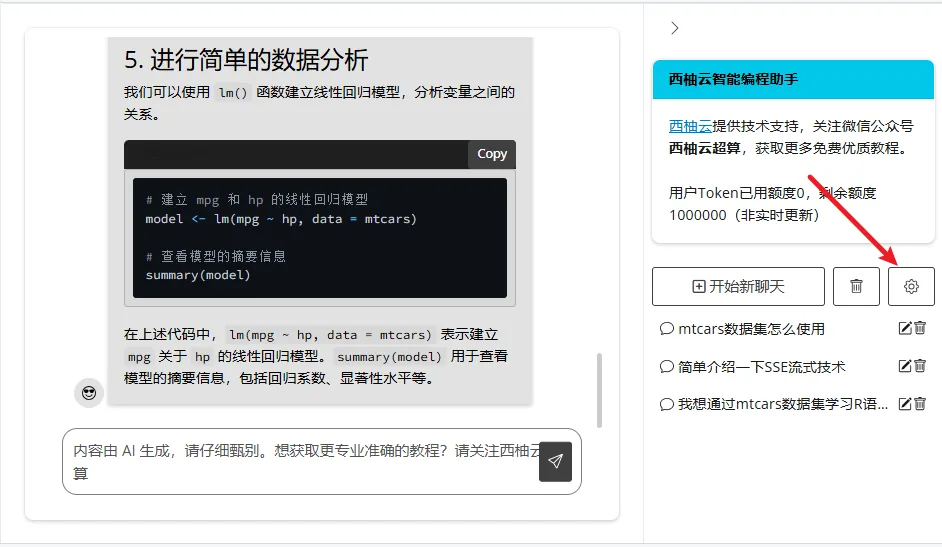
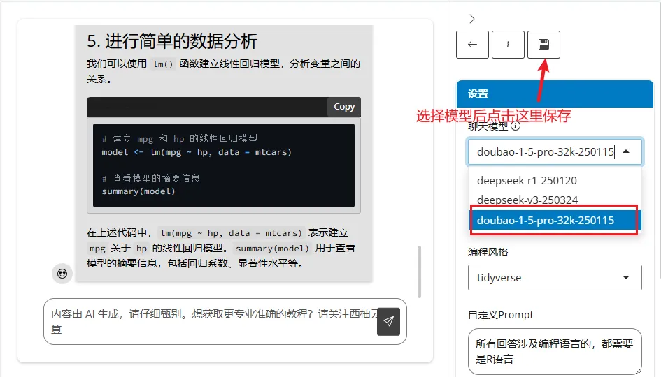
知识点
- AI编程和AI注释的过程有点久，这是为啥呢？我们平时和大模型对话，都是流式对话，不至于让人觉得慢，但此处需要让大模型处理完所有需求后一次性返回结果，耐心等待吧☕☕☕~
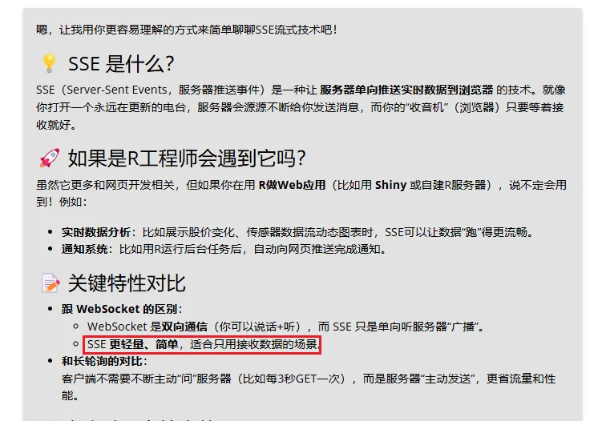

如何联系我们

 留一个领取资料、免费两周学习版服务器的微信号[Biomamba_yunying]，方便各位随时交流。同时我们也构建了交流群矩阵，欢迎大家入群讨论。
留一个领取资料、免费两周学习版服务器的微信号[Biomamba_yunying]，方便各位随时交流。同时我们也构建了交流群矩阵，欢迎大家入群讨论。
大家可以阅读完这几篇之后添加给生信入门初学者的小贴士 如何搜索公众号过往发布内容
已有生信基地联系方式的同学无需重复添加

 您点的每个赞和在看，我都认真当成了喜欢
您点的每个赞和在看，我都认真当成了喜欢